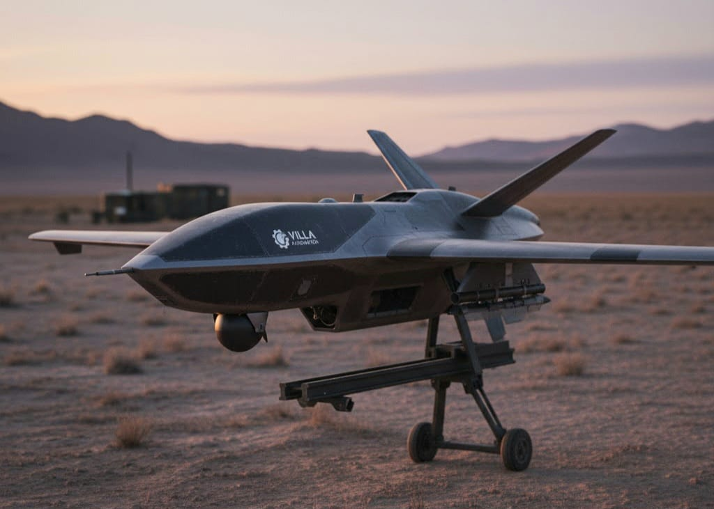
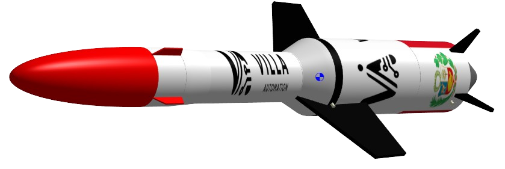

En el presente espacio les presentamos la Tecnología de vehiculos no tripulados desarrollada por nuestra empresa Villa Automation S.A.C
Villa Automation anuncia el desarrollo de una nueva línea de Vehículos No Tripulados (UAV/UGV) orientados a aplicaciones tácticas, defensa, inspección avanzada y operaciones autónomas de alta precisión. Esta nueva línea incluye plataformas aéreas inspiradas en el concepto de drones kamikaze de precisión, así como vehículos terrestres robóticos autónomos destinados a misiones críticas donde la intervención humana resulta limitada o riesgosa.
La iniciativa integra tecnología de guiado, navegación y control desarrollada por Villa Automation, aplicando ingeniería nacional para crear sistemas no tripulados de uso táctico y estratégico. Los vehículos están diseñados con los siguientes principios: Alta autonomía y precisión en navegación y trayectoria. Capacidad de operación en escenarios hostiles o de difícil acceso. Arquitectura modular para incorporar diferentes cargas útiles. Resiliencia y robustez estructural, adaptadas a misiones tácticas. Compatibilidad con sistemas de mando remoto, autopiloto y misiones preprogramadas. 
Se está trabajando en el diseño de un UAV compacto, rápido y preciso, basado en los principios de funcionamiento de los drones kamikaze modernos, optimizado para misiones de impacto controlado y neutralización rápida de objetivos. Las características contempladas incluyen: Ala fija o híbrida para maximizar velocidad y autonomía. Sistema de navegación inercial + GPS con guiado inteligente. Control de trayectoria predictivo, basado en algoritmos desarrollados en Villa Automation. Integración de telemetría en tiempo real, enlace de datos seguro y resistencia a interferencias. Capacidad de vuelo autónomo desde lanzamiento hasta impacto o punto objetivo. Este enfoque permite un vehículo eficiente, rápido de desplegar y adecuado para operaciones tácticas de precisión.
Junto con los UAV, Villa Automation desarrolla una línea de UGV de nueva generación, capaces de operar en territorios accidentados, zonas de riesgo y escenarios donde la presencia humana debe ser minimizada. Estos vehículos integran: Plataformas oruga o ruedas-oruga híbridas para máxima tracción. Sensores de navegación avanzada, visión computarizada y telemetría. Control inteligente adaptado a entornos complejos. Diseño modular para cargas específicas: reconocimiento, transporte, intervención, manipulación remota, entre otros. Operación remota y modos autónomos para patrullaje o exploración.
El desarrollo de esta línea se basa en experiencia consolidada en: Sistemas de guiado y control de vehículos lanzadores. Robótica colaborativa y terrestre. Electrónica de misión crítica y sensores avanzados. Diseño de plataformas de navegación aérea y terrestre. Inteligencia artificial y control predictivo. Los nuevos vehículos no tripulados fortalecen la visión de Villa Automation de convertirse en un referente en tecnología de defensa, robótica avanzada y soluciones autónomas en Perú.
Villa Automation refuerza su misión de impulsar tecnología peruana de alta complejidad, diseñada y fabricada a nivel local con estándares internacionales. La nueva línea de UAV y UGV representa un paso decisivo hacia sistemas autónomos avanzados para sectores estratégicos del país.
Presupuesto de cohetes experimentales